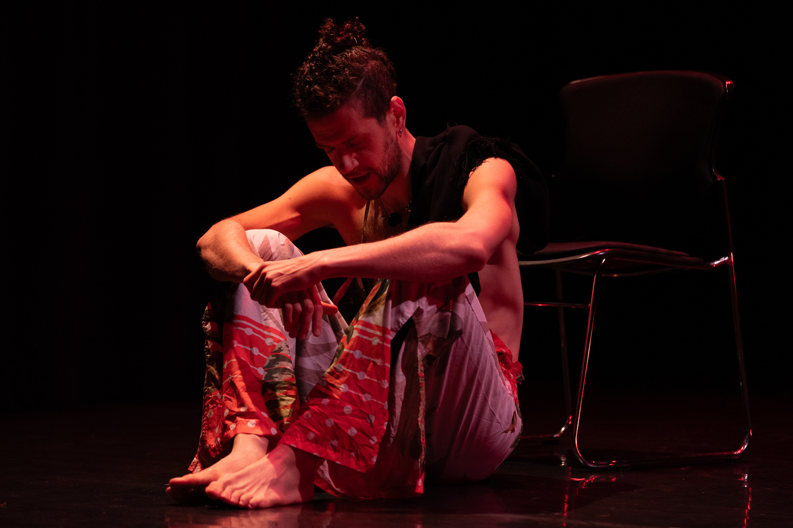
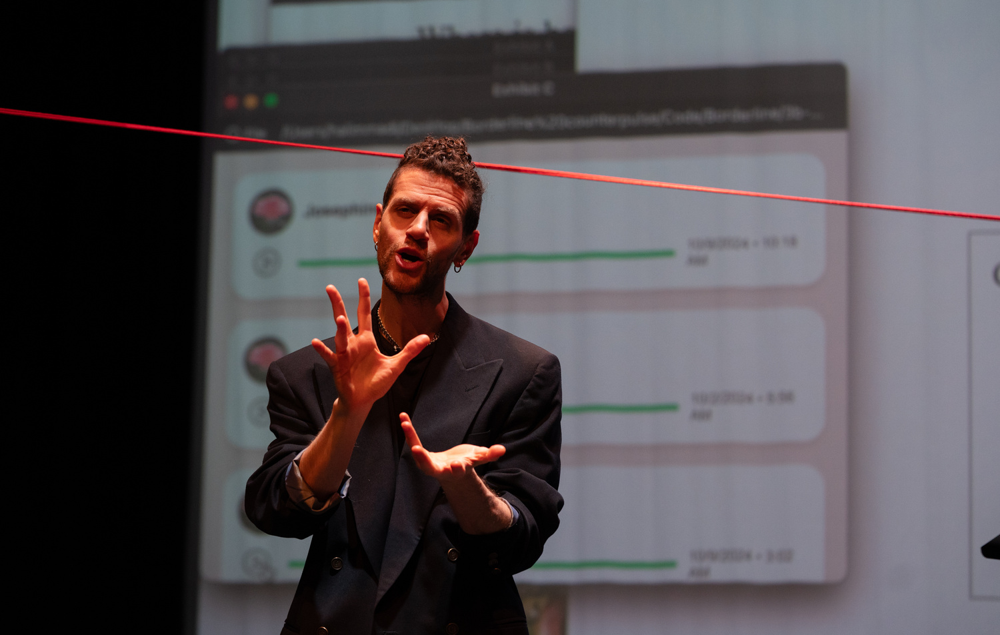
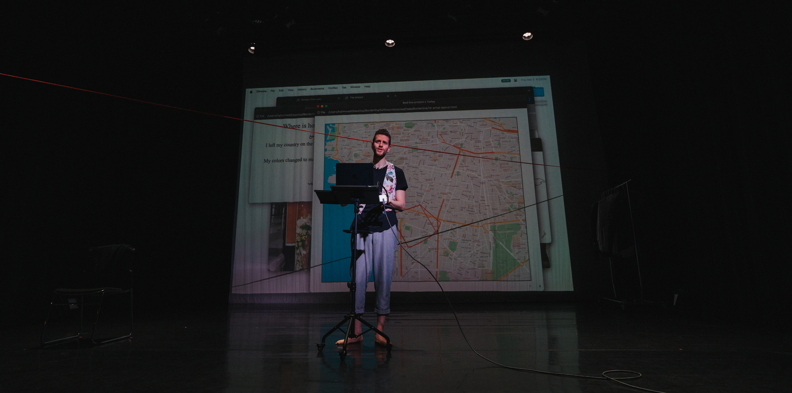
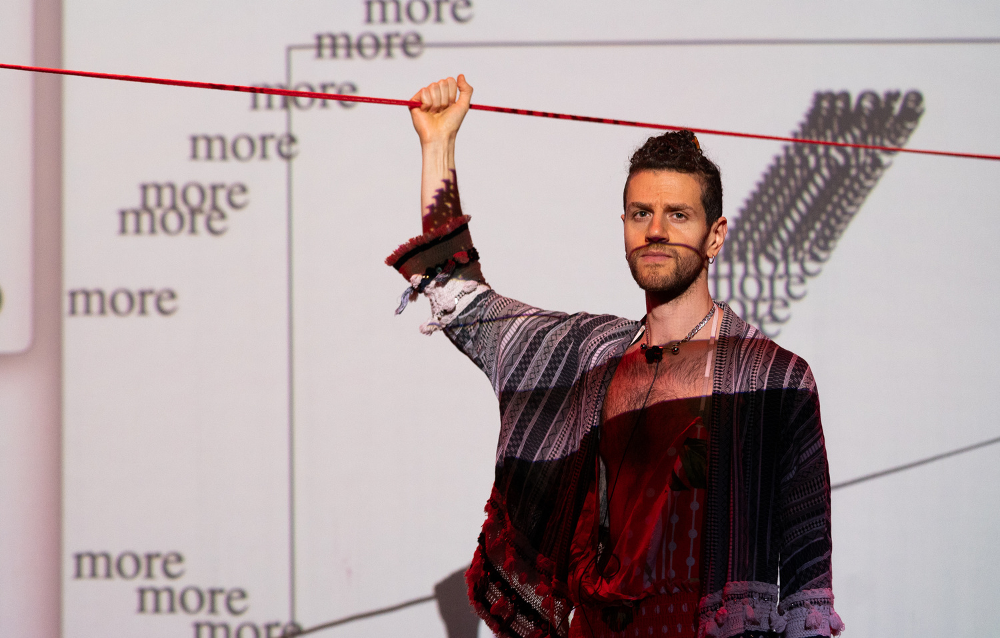
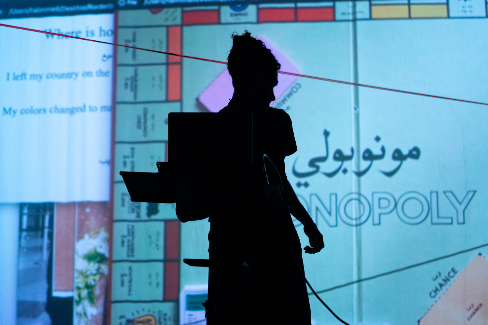
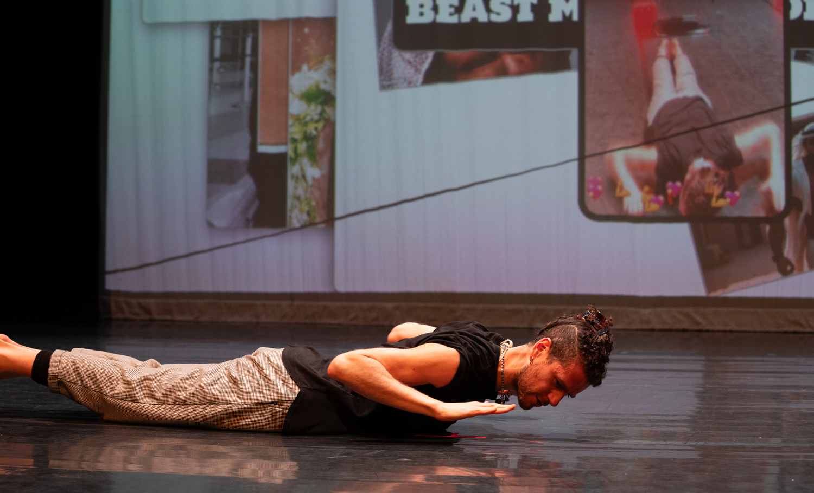
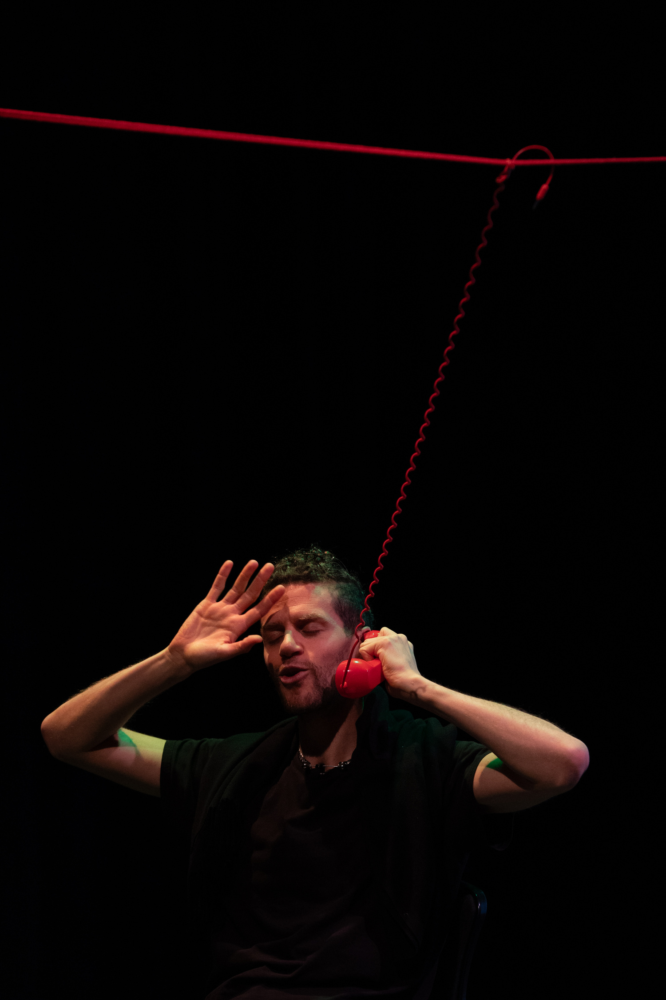
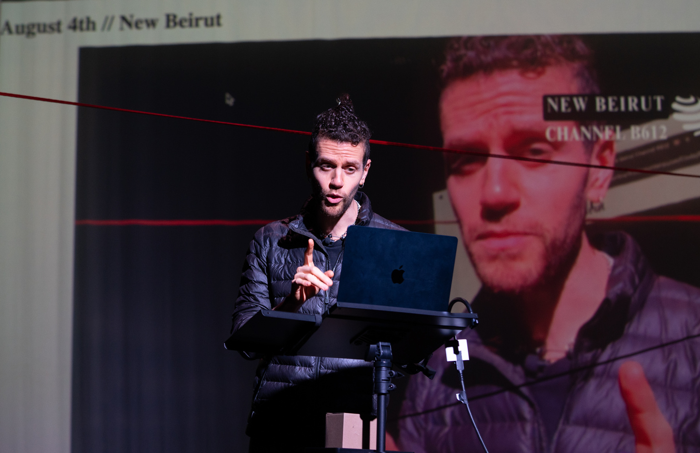
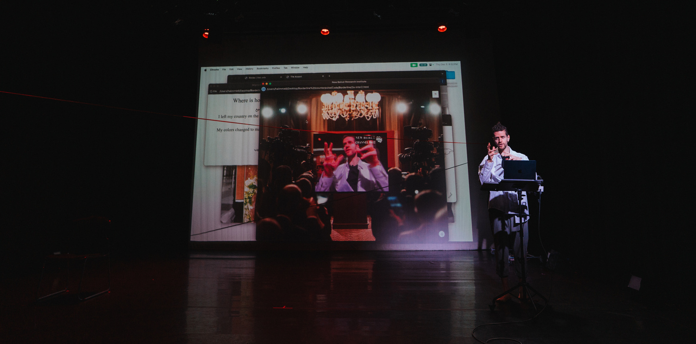
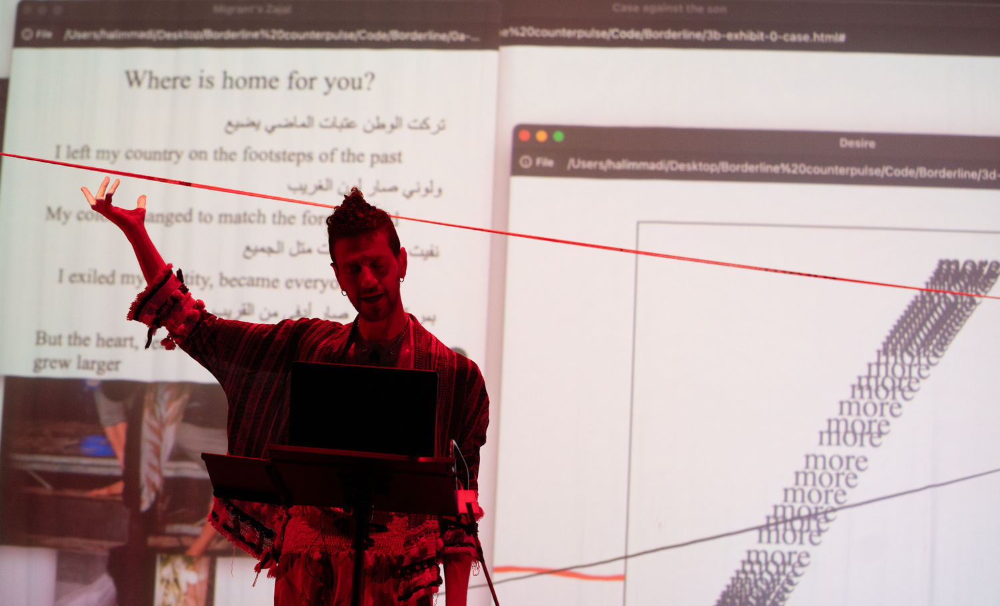

Borderline

Borderline is not a metaphor. It is a line, sometimes digital, sometimes painted, sometimes sung. In the speculative city of New Beirut, a red line appears. No one knows where it came from. Some say it’s a glitch in spacetime, others say it’s grief made visible. The performance unfolds through a layered score of HTML poetry, news broadcasts, family stories, and border interrogations, each scene revealing how migration shapes the body and bends language.
“We become the borders we cannot cross.”

Performed live at CounterPulse (2024), Borderline is a devised solo piece by Halim Madi. It weaves movement, memory, and testimony into a poetic structure: a dom’s back becomes a red constellation, a child carries a forgotten package through an airport, a mother’s voice loops on cassette. A red thread stretches across the stage, literal and metaphorical, as bodies trace its contours, hesitate, cross, retreat.




Characters shrink and swell under the weight of forms: green cards, airport lines, family expectations. Each identity, each scene, is a transformation. Some become lines. Others become the will to cross.

Throughout the piece, a refrain returns in Arabic zajal, echoing across timelines:

English Translation:
I left the homeland on the footsteps of the past.
My color became the color of the stranger.
I exiled my identity, became like everyone else.
But my heart grew, warmer than those close to me.





Borderline is part testimonial theater, part poetic archive. It does not seek to resolve the border, but to live inside its contradictions, to hold space for the slow violence of paperwork, longing, and displacement. By inviting the audience to share their own “red lines” - locations in the city where they feel at home - the piece culminates in a collective digital map: a memory atlas of survival.
“Whether drawn on skin or screen, the border is not just something we cross. It is something we become.”